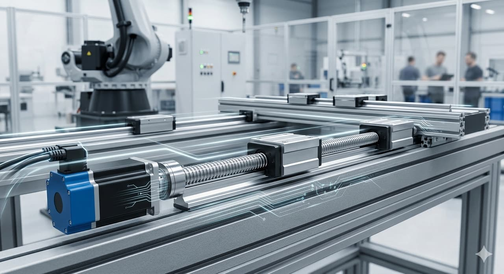

Automatisation, Électricité & Mouvement
Automatisation, électricité & contrôle de mouvement
Automates, IHM, capteurs, variateurs, appareillage de commande et composants de mouvement pour les machines et les installations.

Aucune référence ne correspond à votre recherche. Décrivez-nous l’article directement : nous l’identifions.
Contrôleurs & IHM
Automates, modules d'extension, IHM et systèmes SCADA qui coordonnent la logique machine, visualisent les procédés et permettent aux opérateurs de superviser les lignes automatisées.
- PLC (Programmable Logic Controller)
- PLC Expansion Module
- I/O Module (Digital, Analog)
- HMI Touch Panel
- Industrial PC
- SCADA System
Moteurs & Variateurs
Systèmes de moteurs servo, pas-à-pas et AC avec variateurs et contrôleurs associés pour un contrôle précis de vitesse, couple et positionnement.
- Servo Motor
- Servo Drive
- Stepper Motor
- Stepper Driver
- Brushless DC Motor
- AC Motor Controller
- Variable Frequency Drive (VFD)
- Soft Starter
- Motor Protection Relay
Capteurs & Interrupteurs
Dispositifs de détection et de retour — capteurs de proximité, photoélectriques, laser, ultrasoniques, codeurs, interrupteurs et capteurs IoT — qui fournissent aux équipements automatisés un retour fiable de position et de procédé.
- Proximity Sensor (Inductive, Capacitive)
- Photoelectric Sensor
- Laser Sensor
- Ultrasonic Sensor
- Magnetic Sensor
- Limit Switch
- Micro Switch
- Encoder (Incremental, Absolute)
- Resolver
- Industrial Sensor Cable
- Encoder Cable
- Industrial IoT Sensor
Composants d'Armoire & de Puissance
Relais, contacteurs, disjoncteurs, alimentations, armoires et accessoires de câblage pour construire des armoires de commande fiables et conformes.
- Relay
- Solid State Relay
- Contactor
- Circuit Breaker
- Power Supply (SMPS)
- Industrial Transformer
- Control Cabinet
- Control Panel Components
- Terminal Block
- Industrial Connector
- Cable Chain / Drag Chain
- Control Cable
Réseaux Industriels
Matériel de réseau et de communication — commutateurs, passerelles, routeurs et modules de protocole — reliant machines, salles de contrôle et logiciels de supervision.
- Industrial Ethernet Switch
- Communication Module (Modbus, Profibus, CAN, EtherCAT)
- Industrial Router
- Industrial Gateway
- Data Logger
- Automation Software License
Sécurité machine (commande)
Dispositifs de sécurité qui arrêtent ou isolent les machines sur demande, protégeant le personnel autour des équipements automatisés.
- Safety Light Curtain
- Safety Relay
- Emergency Stop Button
- Safety Interlock Switch
Actionneurs & Systèmes de Mouvement
Actionneurs, réducteurs et contrôleurs de mouvement — y compris bras robotisés et cobots — assurant un positionnement contrôlé pour axes automatisés et tâches de manutention.
- Actuator (Electric, Pneumatic)
- Linear Actuator
- Rotary Actuator
- Motion Controller
- Positioning Controller
- Robot Arm
- Collaborative Robot (Cobot)
- Servo Gearbox
- Planetary Gearbox
- Timing Belt Drive
- Synchronous Pulley
Applications
Où ces composants interviennent
- Armoires de commande et postes de conduite
- Convoyeurs, pompes et ventilateurs à vitesse variable
- Automatisation de process et supervision
- Rénovation et mise en conformité d’installations existantes
- Sécurité machine et arrêt d’urgence
Sourcing technique
Vous n’avez pas besoin de la référence exacte
Vous n’avez pas toujours besoin de connaître la référence exacte. SUJO peut analyser une plaque signalétique, une photo, un plan, une fiche technique ou un composant existant afin d’identifier la bonne pièce, de vérifier la compatibilité et de proposer des solutions OEM, équivalentes ou alternatives selon les exigences du projet.
Demander un devis
Ce qu’il nous faut pour chiffrer
Tout ce que vous avez suffit pour commencer. S’il vous manque un élément, envoyez le reste : nous complétons par la recherche technique.
- Référence fabricant ou numéro de pièce
- Photo de la pièce ou de la plaque signalétique
- Marque et modèle de l’équipement
- Quantité requise
- Dimensions, pression, débit, tension ou spécifications pertinentes
- Lieu de livraison et délai souhaité